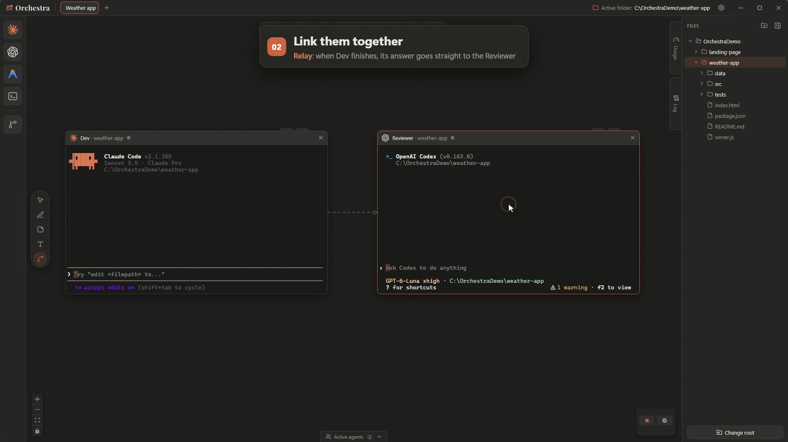

Drop an agent from the dock
Pick a folder in the explorer and drop Claude Code or Codex on the map. It runs in a real terminal, not a chat imitation.
Drop Claude Code, Codex and any CLI agent on an infinite map, each in a real terminal. Then link them, and watch them hand work to each other.

Supported agents
Full integration Claude Code and Codex: relay, delegation, roles and precise status through hooks.
Also runs in a terminal Any other CLI gets a status from terminal activity and can receive relayed messages.
Video tour
The map
Drag an agent from the dock: it starts in a real terminal, in the folder you picked. Line up as many as you want, across as many boards as you need.
Pick a folder in the explorer and drop Claude Code or Codex on the map. It runs in a real terminal, not a chat imitation.
The active agents bar lists everything running across all your boards, with its live status.
Sketch and leave notes on the map, next to your agents.
Eight themes, your own accent color, terminal font size, English or French.
Agent links
Draw a link between two tiles and choose how they work together. A turn limit on every link keeps conversations from looping forever.
When the source finishes, its last answer goes to the target with your instruction. Dev fixes the bug, Reviewer reviews the fix, automatically.
Review this fix in 3 short bullet points: {response}
The source decides by itself when to talk to the others, through Orchestra's MCP tools, then waits for their replies. Here one agent asks Claude and Codex for ideas and picks the best one.
list_agents · send_to_agent · wait_for_replies
Hand an agent a terminal you can see. With your permission, it starts a command there, like npm start, and reads its output. It can also interrupt it.
run_in_terminal · read_terminal · interrupt_terminal
Pick the Link tool, click one tile, then another. Choose the link type and its instruction, and set the turn limit. A link can also be reversed or made two-way.
L · click A · click B
Git
Drop the Branch square on an agent: it restarts in its own git worktree, so agents working in parallel never edit the same files.
Pick a local or remote branch and the agent restarts in it. A notch on the tile shows which branch it works on.
See the files an agent touched with a colored diff, and open them in VS Code in one click.
Control
"You are the reviewer, you never edit files." Given at the start of every session, even after /clear.
Every message, reply, command and refusal that went through a link. Click a name to find its tile.
When an agent finishes, its tile turns green and Windows shows a notification with a sound, even when Orchestra is in the background.
claude or codex must already work in a normal terminal.%APPDATA%\Orchestra: settings, boards, custom agent logos (logos), the per-session hook files of Claude Code (hooks), and usage-probe, a folder where Orchestra runs Claude Code in the background to read your usage. The exchange log stays in memory.~/.claude.json: a folder opened with Claude Code is marked as trusted, so Claude does not ask again (can be turned off in Settings › General). Hooks and the MCP server are passed to each Claude Code session at launch; your Claude settings files are not changed.~/.codex/orchestra.config.toml, a separate Codex profile with Orchestra's MCP server (your config.toml is never changed), and Orchestra's own entries in ~/.codex/hooks.json. Both are written when the app starts and do nothing when Codex runs outside Orchestra.Windows Settings › Apps › Installed apps (Windows 11) or Apps & features (Windows 10) › Orchestra › Uninstall. The uninstaller leaves your data: to remove everything, also delete %APPDATA%\Orchestra, ~/.codex/orchestra.config.toml and the entries of ~/.codex/hooks.json that contain ORCHESTRA_HOOK_URL. The trusted-folder entries written to ~/.claude.json also stay; they belong to Claude Code's own list of trusted folders.
Get the installer (Orchestra-Setup-<version>.exe) from the latest release and run it.
The app isn't code-signed yet: if Windows says "Windows protected your PC", click More info, then Run anyway. The source code is public on GitHub.
Make sure claude or codex works in a terminal, then drag it onto the map. A guided tour shows you the rest.
Any agent that runs in a terminal: Claude Code, Codex, Gemini CLI, Antigravity, Aider, Qwen Code, OpenCode, Copilot CLI, Cursor CLI, Goose, Amp, Kimi CLI, Hermes Agent… or your own command. Relay, delegation, roles and precise status are built for Claude Code and Codex. Other agents get a status from terminal activity and can receive relayed messages.
No. Orchestra launches the CLIs you already installed and logged in, with your own subscriptions.
Orchestra itself sends nothing anywhere. Your agents talk to their own providers exactly as they do in a normal terminal.
No. Every link has a turn limit (3 by default, up to 20), and you can switch any link off in one click. Every exchange shows up in the log.
It can. Every tile uses your own plan, and linked agents that keep handing work to each other add up quickly. Keep turn limits low and switch links off when you don't need them.
The same as in your own terminal: each tile runs the real CLI in the folder you picked, with that CLI's usual permission settings. Orchestra never approves a permission request for an agent. Its own tools are pre-approved, except running a command in a linked terminal, which always asks first.
Not yet: Orchestra runs on Windows 10 and 11 only for now. Follow the project on GitHub to hear when that changes.